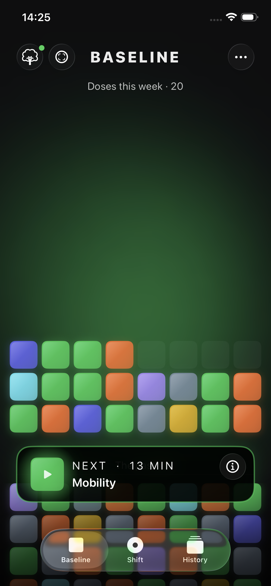
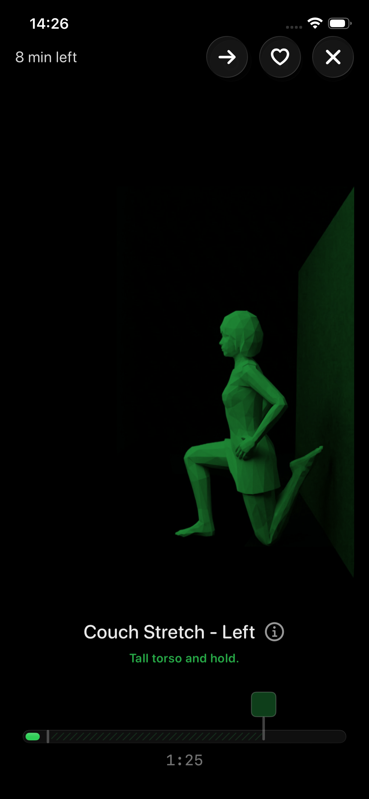
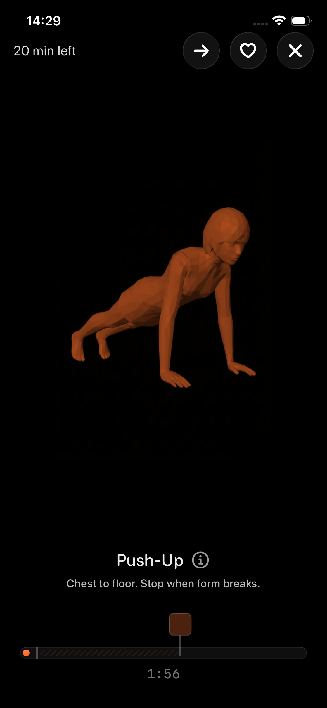
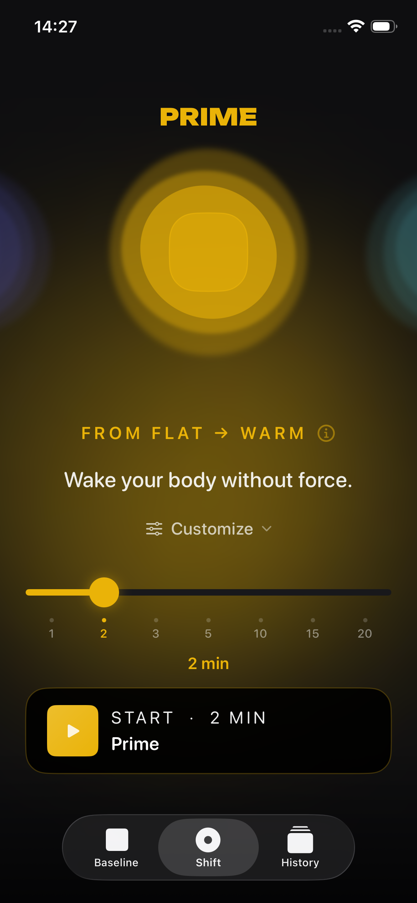
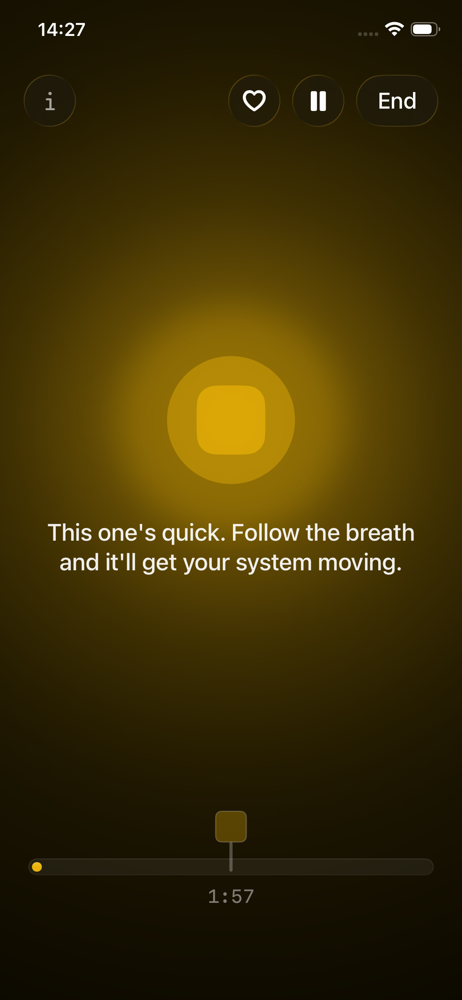

Baseline combines mobility, strength, and breathwork into a single app. Each session type takes under 20 minutes. The system builds your session based on evidence-based minimum effective doses, so there is nothing to choose, plan, or think about. Launching May 2026 on iPhone.
Please use the app icon as provided. Do not modify, recolor, or add effects.
Screenshots





About Baseline
What
Mobility, strength, and breathwork in a single app. Each session type takes under 20 minutes. The system builds your session. No choosing. No planning. Press start.
Platform
iPhone (launching May 2026)
Price
$9.99 USD per year. The average fitness app charges $10 or more per month. Baseline costs less for an entire year than most apps charge for a single month.
Philosophy
Every exercise is informed by a researched minimum effective dose. Baseline delivers exactly that, nothing more. Health should be a quiet background state, not a project you manage.
Research
Informed by peer-reviewed studies published in Nature Medicine, The Lancet Public Health, and Sports Medicine on minimal-dose exercise, mortality reduction, and cardiovascular outcomes.
Privacy
No accounts, no ads, no data sold. Works offline. No equipment needed.
Integration
Reads and writes to Apple Health. Adapts sessions based on recent training activity.
Boilerplate
Baseline is a health app for iPhone built around researched minimum effective doses for mobility, strength, and breathwork. The system builds your session, there is nothing to choose, plan, or configure. It costs $9.99 USD per year, requires no account, and launches May 2026.
Story Angles
The health app that doesn't make you choose your workout. No library, no plans, no browsing. You open it, press start, and the system decides. It's built on the idea that every fitness app you've abandoned failed for the same reason: choosing is exhausting.
The app that tells you when to stop, not when to start. Every exercise in Baseline has a researched minimum effective dose. Hit it and you're done. The science says short and frequent beats long and rare. Baseline is built around that.
Three fitness disciplines. One Start button. Under 20 minutes. Mobility, breathwork, and bodyweight strength, usually sold as three separate subscriptions. Baseline combines them into a single system-generated session for $9.99 a year.
Key Numbers
55+
exercises with researched minimum effective doses
5
configurable breathwork protocols with binaural beats, ambient sounds, and narration
<20min
per session type
$9.99 USD/yr
vs $120+ USD/year industry average
0
accounts, ads, or data sold
4
peer-reviewed studies cited (Nature Medicine, The Lancet, Sports Medicine)
Founder
Tim de Jardine
Founder, Baseline
3x CPO and 2x co-founder with a track record of building consumer products from zero to scale. Former Head of Product at ATHLEAN-X and CPO at SportCity (top-10 European gym chain). Deep roots in fitness and consumer apps. Baseline is what happens when you stop overcomplicating health.
Research
The minimum effective dose concept in Baseline is informed by peer-reviewed research on minimal-dose exercise.
Short bursts of activity reduce mortality by 40%
Stamatakis, E. et al. (2022). Nature Medicine, 28(12), 2521-2529. doi.org/10.1038/s41591-022-02100-x
Minimal-dose resistance training improves strength and function
Fyfe, J.J. et al. (2022). Sports Medicine, 52(3), 463-479. doi.org/10.1007/s40279-021-01605-8
Brief bouts of activity cut cardiovascular risk
Ahmadi, M.N. et al. (2023). The Lancet Public Health, 8(10), e800-e810. doi.org/10.1016/S2468-2667(23)00183-4
Lower doses are enough for sedentary populations
Behm, D.G. et al. (2023). Sports Medicine, 54, 289-302. doi.org/10.1007/s40279-023-01949-3
Download
Download on the App Store
Available May 2026 on iPhone
Press Contact
For review builds (TestFlight), interviews, or additional assets:
{kind=link}